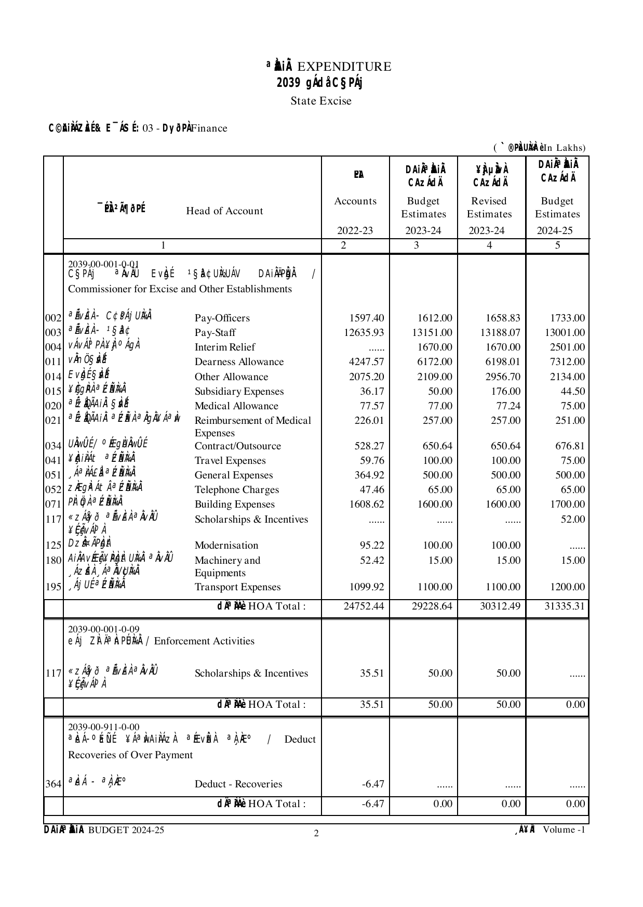
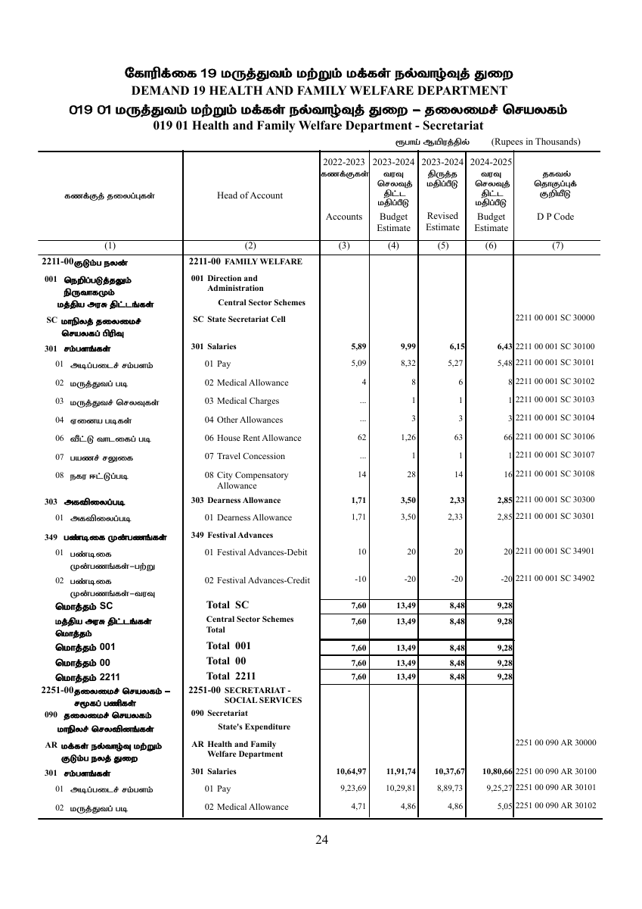
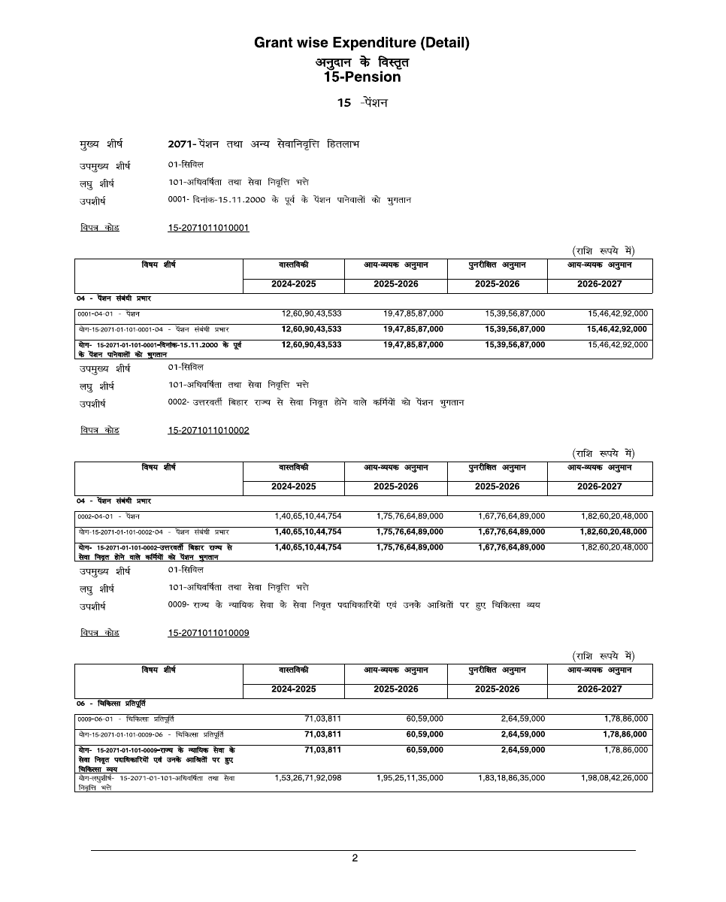
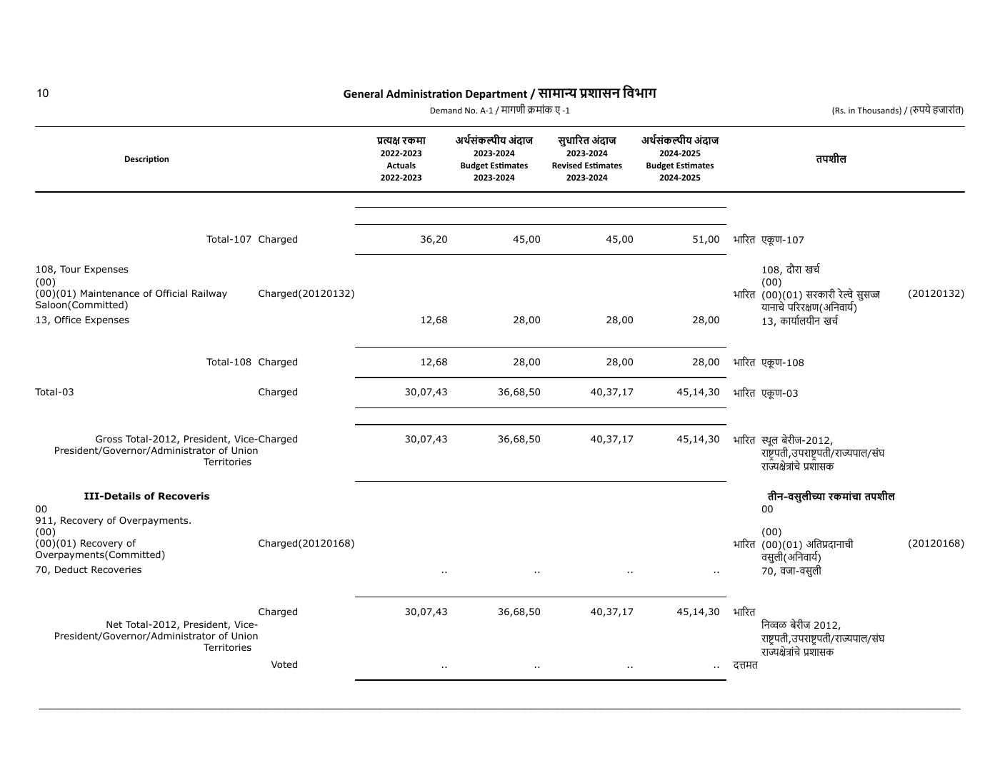

Source formats and units
A demand is a grant for a department or purpose. A major head is a broad spending function. The same major head can appear in more than one demand. The budget CSVs keep detail and subtotal rows together so you can match them to the source.
| State | Source documents | Source unit | Divide by for crore | Spending detail row |
|---|---|---|---|---|
| Karnataka | Detailed Estimates of Expenditure, in numbered volumes | Rupees in lakh | 100 | Object head |
| Tamil Nadu | Detailed Budget Estimates, usually one book per demand | Rupees in thousands | 10,000 | Sub-detailed head |
| Bihar | Detailed Budget Estimates of Expenditure, combined volumes and per-demand books | Rupees | 1,00,00,000 | Object head |
| Maharashtra | Demands for Grants, in department white books | Rupees in thousands | 10,000 | Object head in the details table |
Explore displays amounts in crore. Use the source unit above when you work with the raw files. See Extraction coverage for known missing pages in Bihar and Maharashtra.
What changed by year
Each state's published budget CSVs use the same set of fields across the years in the package. Amount column names include the fiscal year. The source changes below can affect which rows or values you find in those fields.
| State | Source books | Published budget CSVs |
|---|---|---|
| Karnataka | The package uses numbered expenditure volumes throughout. | Through 2022-23 the files include separate minor-head and sub-major-head summary rows. These summary rows are absent from the published files from 2023-24. Use the object_head table for detail across years. |
| Tamil Nadu | From 2017-18 funding labels such as State's Expenditure replace plan labels such as Non-Plan and State Plan. D P Codes have four-digit endings through 2018-19, a mix of four- and five-digit endings in 2019-20, and generally five-digit endings from 2020-21. | group_sub_head carries the source funding label. full_account_code carries the D P Code. Use the year to interpret both when comparing detailed lines. |
| Bihar | One combined volume per year through 2020-21. One PDF per demand from 2021-22. | pdf_page_number points to the page position within that year's source PDF. Some demand books include summary annex rows with type_of_table = 'object_head_summary'. Exclude these rows when you sum expenditure. |
| Maharashtra | Through 2017-18 the amounts span facing pages and can split into Non-Plan, Plan and Total. From 2018-19 one page carries the four main amounts. | The main amount fields carry the totals across both formats. The extra Plan and Non-Plan fields are blank from 2018-19. Use the main amount fields for comparisons across years. |
Karnataka expenditure volumes
The numbered expenditure volumes place object-head detail and higher-level summary tables in the same books. Look for the demand and major head, then find the detailed head above the spending lines. An HOA Total is the printed total for that head of account. The public package covers 2018-19 to 2026-27.


KA_2024_25_EXPVOL1.pdf, page 2 — Demand 03 (Finance), Major Head 2039 (State Excise). Excise administration sits under the Finance Department, so it appears in Demand 03. Click the image to open it full-size.The table below is the machine-readable version of that page (the current-year Budget Estimate column shown):
| Sum? | row_type | row_level | row_header | object_ head_code | BE 2024-25 (₹ lakh) |
|---|---|---|---|---|---|
| × | Header | Detailed-Head | Commissioner for Excise and Other Establishments | ||
| ✓ | Data | Object-Head | Pay-Officers | 002 | 1,733.00 |
| ✓ | Data | Object-Head | Pay-Staff | 003 | 13,001.00 |
| ✓ | Data | Object-Head | Interim Relief | 004 | 2,501.00 |
| ✓ | Data | Object-Head | Dearness Allowance | 011 | 7,312.00 |
| ✓ | … 13 more Object-Head leaf rows (all visible on the page image) … | 6,788.31 | |||
| × | Total | Detailed-Head | HOA Total (Head of Account) | 31,335.31 | |
Tinted rows are the additive leaves. The 17 leaf rows sum to 31,335.31 lakh. The printed total repeats the same amount.
Tamil Nadu demand books


A demand can contain several Heads of Department. Within each one, the detail table groups schemes by a plan or funding label such as Central Sector Schemes. The D P Code at the right identifies the budget line. The final rows under each detailed head are called sub-detailed heads.
On this page, Pay is a sub-detailed head under Salaries. Its 2024-25 Budget Estimate is 548 thousand rupees. The Salaries subtotal is 643 thousand rupees and includes Pay.
The package uses the Revised Budget Estimate edition for 2016-17 and 2021-22. The 2021-22 edition covers demands 01 to 37.
Bihar volumes and demand books


The data keeps the Hindi account names. Use the major-head code to find the same function in another state.
The page repeats the four amount columns for each block of accounts. In the first block, the pension object line under major head 2071 has a 2026-27 Budget Estimate of ₹15,46,42,92,000. The next two lines repeat that amount as totals.
The package stores both the printed page number and the page position in the PDF.
Maharashtra department white books
The letter in a demand code identifies the department book. For example, A-1 is a demand in the General Administration Department book. Use the full code when you look up a demand. The public series has gaps for 2011-12 and 2025-26.



The detail rows give gross expenditure. On the 2024-25 page, Office Expenses is a detail row with a Budget Estimate of 2,800 thousand rupees. The minor-head total repeats it. To reconcile gross with net, deduct recoveries from the printed Gross Total for the same major head and demand.
The columns you’ll use first
These fields identify a line and its amount. The examples use Karnataka field names. See the state package notes for the raw column names in each state.
| Column | What it is |
|---|---|
fiscal_year | The year an amount refers to, e.g. 2024-25. |
measure | One of BE, RE, Actuals (see the three measures). In the raw CSV these are separate amount columns instead. |
demand_number | The grant code. In Karnataka, 03 is Finance. Find the names in the state package's demand lookup, such as KA_demand_names.json. |
major_head_code / major_head_name | Broad function, e.g. 2210 Medical and Public Health. |
object_head_code / object_head_description | The line item, e.g. 003 Pay-Staff (see the ladder). |
amount_lakh | Amount in lakh rupees in the prepared Karnataka example table. The raw files identify their unit in amount_unit. |
type_of_table, row_type, row_level | The three columns that tell you which rows are safe to add (see Don’t double-count). Needed for the raw CSV; the examples/ tidy table has already applied them. |
The accounting ladder
These are the six main levels in Karnataka's expenditure tables. Other states can add levels or use different code lengths. Tamil Nadu adds a funding group and calls its lowest level the sub-detailed head.
00 often means no sub-major split.003 for Pay-Staff. These detail rows can be added together.Don’t double-count
You just saw it: the object-head leaf rows under “Commissioner for Excise” sum to 31,335.31, and the HOA Total row says 31,335.31 again. Do not sum the whole table. Totals and summary rows repeat amounts already present in leaf rows.
Use the package's budget_leaves files for rows you can add. To get the same rows from a raw CSV for Karnataka, Bihar or Maharashtra, apply all three conditions below.
WHERE type_of_table = 'object_head'
AND row_type = 'Data'
AND row_level = 'Object-Head'For Tamil Nadu, use type_of_table = 'detailed_expenditure', row_type = 'Data' and row_level = 'Sub-Detailed-Head'. The prepared Karnataka example table already applies its filter.
Voted and charged
vote_charge_marker captures the source distinction where it is printed. Charged expenditure is not submitted for vote under the Constitution; voted expenditure is subject to legislative vote.
Validation is an internal consistency signal, not a guarantee that every PDF character was extracted correctly.
Budget estimates, revised estimates and actuals
The books usually show four amounts for three fiscal years. For a given fiscal year, take the Budget Estimate from that year's book, the Revised Estimate from the next year's book, and Actuals from the book two years later. The prepared Karnataka example table already applies this rule.
A missing book can leave a measure blank. For example, Maharashtra's 2024-25 Revised Estimate needs the 2025-26 book, which is absent from the public package.
Validation drilldown
This check key is from the Karnataka package.
KA.2021-22.expvol_1.in_schema.object_head.minor.03_2043_00_101| Part | Meaning |
|---|---|
KA | Karnataka. |
2021-22 | Source budget year. |
expvol_1 | Expenditure volume 1. |
in_schema | The check stays inside one source table family. |
object_head | The table family being checked. |
minor | The rollup level: object-head rows are compared with a printed minor-head total. |
03_2043_00_101 | Demand 03, Major Head 2043, Sub-Major 00, Minor Head 101. |
In checks_2021-22.csv, this key has four financial-column comparisons. Two pass exactly; two differ by INR lakh 1 and fail the 0.01 threshold. A 0.01 difference is one-hundredth of the package amount unit; if INR_lakh is correct, that is Rs 1,000.
Files to use
Each state package has budget rows, checks, a validation summary and a data dictionary. These file paths use Karnataka's prefix, KA.
| File | Use |
|---|---|
KA_years/KA_<year>/KA_csv/KA_budget_<year>.csv | Extracted source rows with hierarchy, row type, row level, amount columns, and PDF provenance. |
KA_years/KA_<year>/KA_csv/KA_checks_<year>.csv | Validation comparisons by check, account key, and financial column. |
KA_validation_summary.csv / .html | Cross-year validation pass rates by year, demand, and hierarchy level. |
KA_data_dictionary.csv | Column definitions and controlled values for every table. |
examples/ | Worked analyses in Python, R, and SQL on the pre-filtered tidy table. Start with the warm-up — see the examples index. |
Karnataka column reference ↑ top
See Karnataka's data dictionary for the machine-readable definitions of the budget, checks and validation summary tables.
Identity & provenance — where the row came from
| Column | Description |
|---|---|
document_year | Source publication year (e.g. 2024-25). First column in every budget_<year>.csv. |
state_code | Two-letter state code (always KA here). |
volume_number | Source EXPVOL volume number. |
page_number | Body arabic page number within the source PDF. |
row_number | One-based row number within the extracted summary CSV. |
source_file | Package-relative source PDF path. |
Row role & hierarchy — what kind of row, and where it sits
| Column | Description | Values |
|---|---|---|
type_of_table | Source table family. | object_head minor_head sub_major_head |
row_type | Printed row role. | Data Header Total |
row_level | Printed hierarchy level. | Major-Head … Object-Head |
row_header | Clean line-item label as printed. | |
demand_number | Grant / demand number. | |
*_head_code / *_head_name | The six-tier account hierarchy (major, sub-major, minor, sub, detailed, object). See the accounting ladder. | |
full_account_code | Full hierarchical code down to the detailed head. | |
vote_charge_marker | Voted / Charged marker as printed. |
Amounts & measures — the numbers, one set per fiscal year
| Column | Description |
|---|---|
accounts_<year>_amount | Prior actuals (document year − 2), in amount_unit. |
budget_estimate_<year>_amount | Budget estimate for the fiscal year specified in the column name. |
revised_estimate_<year>_amount | Revised estimate (document year − 1). |
amount_unit | Unit of all amounts. Value: INR_lakh (still source-unverified per volume). |
Validation — how trustworthy the row is
| Column | Description | Values |
|---|---|---|
has_check | Whether validation checks are attached to this row. | yes no |
reference_check_id | Lookup key into checks_<year>.csv; populated on total and summary rows. | |
pass / pass_pct | Number and percentage of attached checks that passed. | |
diff / diff_pct | Total absolute gap across this row’s checks, and as a percent of summed targets. |